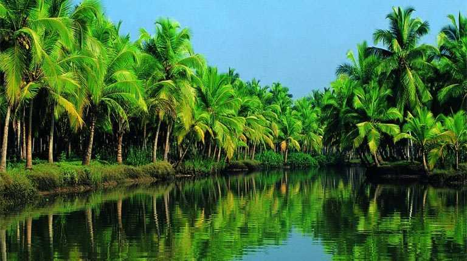
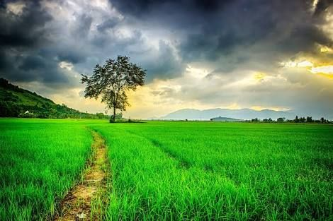

<!-- <!DOCTYPE html>
<html lang="en">
<head>
    <meta charset="UTF-8">
    <meta name="viewport" content="width=device-width, initial-scale=1.0">
    <link rel="stylesheet" href="https://cdn.jsdelivr.net/npm/bootstrap@4.5.3/dist/css/bootstrap.min.css" integrity="sha384-TX8t27EcRE3e/ihU7zmQxVncDAy5uIKz4rEkgIXeMed4M0jlfIDPvg6uqKI2xXr2" crossorigin="anonymous">
<script src="https://cdn.jsdelivr.net/npm/bootstrap@4.5.3/dist/js/bootstrap.bundle.min.js" integrity="sha384-ho+j7jyWK8fNQe+A12Hb8AhRq26LrZ/JpcUGGOn+Y7RsweNrtN/tE3MoK7ZeZDyx" crossorigin="anonymous"></script>
<link rel="stylesheet" href="style.css">    
<title>Kerala Tourism</title>
</head>
<body>
   navigation bar -->
    <!-- <nav class="navbar navbar-expand-lg navbar-light bg-light">
        <nav class="navbar navbar-light bg-light">
            <a class="navbar-brand bg-light" href="#">
              
            </a>
          </nav>
        <a class="navbar-brand " href="#">Kerala - Tourism</a>
        <button class="navbar-toggler" type="button" data-toggle="collapse" data-target="#navbarNav" aria-controls="navbarNav" aria-expanded="false" aria-label="Toggle navigation">
          <span class="navbar-toggler-icon"></span>
        </button>
        <div class="collapse navbar-collapse" id="navbarNav">
          <ul class="navbar-nav ml-auto">
            <li class="nav-item active">
              <a class="nav-link" href="#">Home <span class="sr-only">(current)</span></a>
            </li>
            <li class="nav-item ">
                <a class="nav-link" href="#">About</a>
              </li>
            <li class="nav-item ">
              <a class="nav-link" href="#">Login</a>
            </li>
            <li class="nav-item">
              <a class="nav-link" href="#">Sign-Up</a>
            </li>
          </ul>
        </div>
      </nav> -->
  
      <!-- body section -->
      <!-- <div id="carouselExampleInterval" class="carousel slide" data-ride="carousel">
        <div class="carousel-inner">
          <div class="carousel-item active" data-interval="1000">
            
          </div>
          <div class="carousel-item" data-interval="2000">
            
          </div>
          <div class="carousel-item">
            
          </div>
        </div>
        <a class="carousel-control-prev" href="#carouselExampleInterval" role="button" data-slide="prev">
          <span class="carousel-control-prev-icon" aria-hidden="true"></span>
          <span class="sr-only">Previous</span>
        </a>
        <a class="carousel-control-next" href="#carouselExampleInterval" role="button" data-slide="next">
          <span class="carousel-control-next-icon" aria-hidden="true"></span>
          <span class="sr-only">Next</span>
        </a>
      </div> -->
     
      <!-- 14 states -->
      <!-- <div class="container">
      <div class="card" style="width: 18rem;">
        
        <div class="card-body">
          <h5 class="card-title">Kannur</h5>
          <p class="card-text">Kannur is one of the 14 districts along the west coast in the state of Kerala, India. The city of Kannur is the district headquarters and gives the district its name. The old name, Cannanore, is the anglicized form of the Malayalam name "Kannur". Kannur district is bounded by Kasaragod District to the north, Kozhikode district to the south, Mahé district to the southwest and Wayanad District to the southeast.</p>
        <a href="">Readmore</a>
        </div>
      </div>
      <div class="card" style="width: 18rem;">
        
        <div class="card-body">
          <h5 class="card-title">Alappuzha</h5>
          <p class="card-text">Alappuzha is one of the 14 districts in the state of Kerala in India.It is the smallest district in Kerala.It was formed as Alleppey District on 17 August 1957. The name of the district was officially changed to Alappuzha in 1990.[4] Alleppey town was renamed Alappuzha in 2012, even though the anglicised name is still commonly used to describe the town as well as the district. The district is best known for its picturesque backwaters.</p>
        <a href="">Readmore</a>
        </div>
      
      <div class="card" style="width: 18rem;">
        
        <div class="card-body">
          <h5 class="card-title">Ernakulam</h5>
          <p class="card-text">Ernakulam is a district of Kerala, India. Situated in the central part of the state, spanning an area of about 3,000 km2, Ernakulam district is home to over 9% of Kerala’s population. Its headquarters is located at Kakkanad. Ernakulam district includes Kochi city, which is known as the commercial capital of Kerala. </p>
       <a href="">Readmore</a>
        </div>
      </div>
      <div class="card" style="width: 18rem;">
        
        <div class="card-body">
          <h5 class="card-title">Idukki</h5>
          <p class="card-text">Idukki is a district in the Indian state of Kerala.[1] It was constituted on 26 January 1972, by splitting the district of Kottayam into two parts. Its division was earlier headquartered at Kottayam city, but moved to Painavu in June 1976. Idukki district lies amid the Western Ghats of Kerala.</p>
        <a href="">Readmore</a>
        </div>
      </div>
      <div class="card" style="width: 18rem;">
        
        <div class="card-body">
          <h5 class="card-title">Kasaragod </h5>
          <p class="card-text">Kasaragod or Kasargod is one of the 14 districts in the southern Indian state of Kerala. It is the northernmost district of Kerala and is included in the North Malabar region. It is also known as Saptha Bhasha Sangama Bhoomi (The land of seven languages), as seven languages namely Malayalam, Tulu, Kannada, Marathi, Konkani, Beary, and Urdu are spoken, unlike the other districts of Kerala</p>
        <a href="">Readmore</a>
        </div>
      </div>
    </div>
</body>
</html>  -->